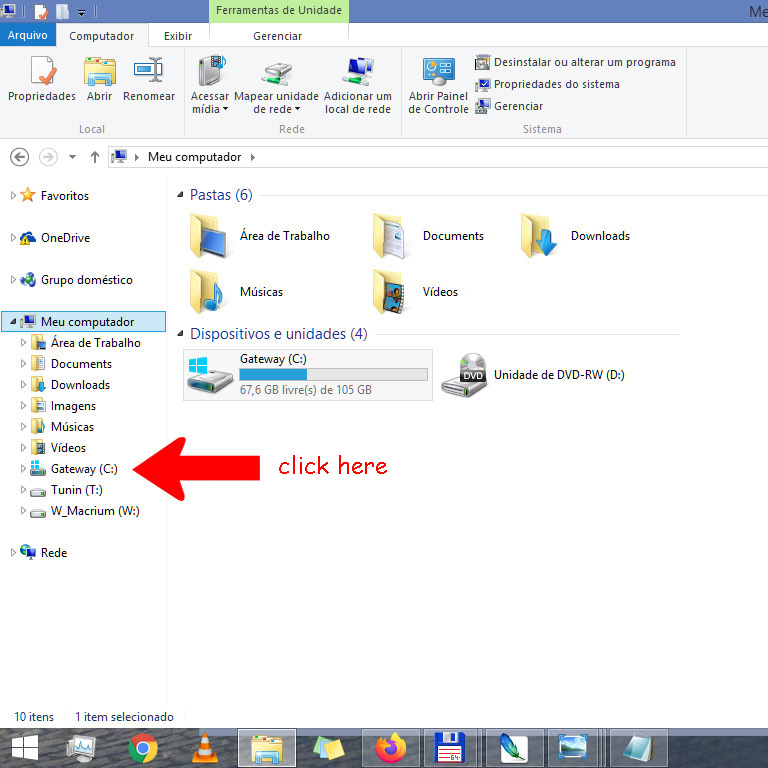
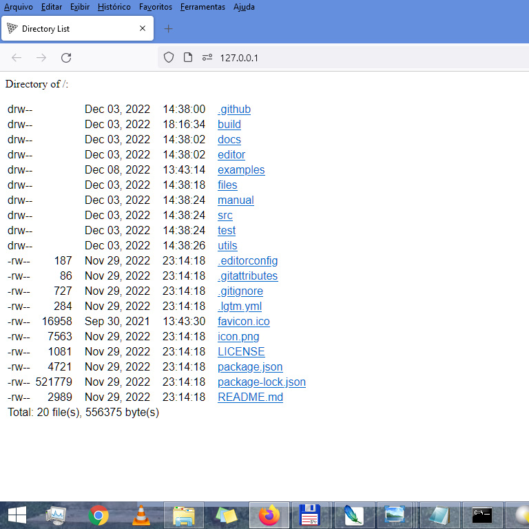

Install and run Three.js in Windows
(not only for grandchildren and grandfathers)
Open https://threejs.org/ and click download to get three.js-master.zip
threejs.org.jpg
Click here to download QuickPHP.zip
Open Windows Explorer and create the 3D folder
windows_explorer.jpg
file_explorer.jpg

c_drive.jpg
Obs.: Novo=New ... Pasta=folder
create_folder.jpg
rename_folder.jpg
folder_3D.jpg
Now we fill 3D folder with downloads contents
open_c.jpg
click_downloads.jpg
double_click_three.jpg
copy_paste_three.jpg
double_click_QuickPHP.jpg
copy_paste_QuickPHP.jpg
Now we have 3D folder with all necessary six files and one folder
view_3D_folder.jpg
It is time to double click in quick.bat file.
double_click_quick.bat.jpg
If the browser does not open, please open a new browser window and insert 127.0.0.1/ in the URL field
Certainly You will see...
three.js-master-files.jpg

And clicking in examples...
examples_folder.jpg
Most of the .html files will open in a click...
To see the html contents of a page You can use Notepad++.
You can open with simple Notepad and beautifier it in https://beautifier.io/
You can copy/move the 3D folder to any volume of the hard disk